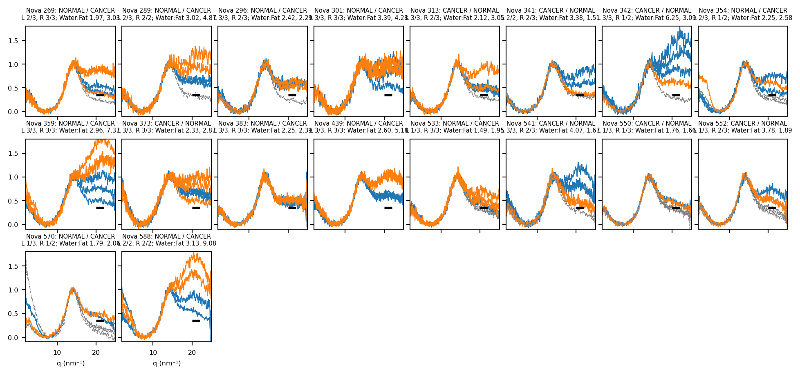
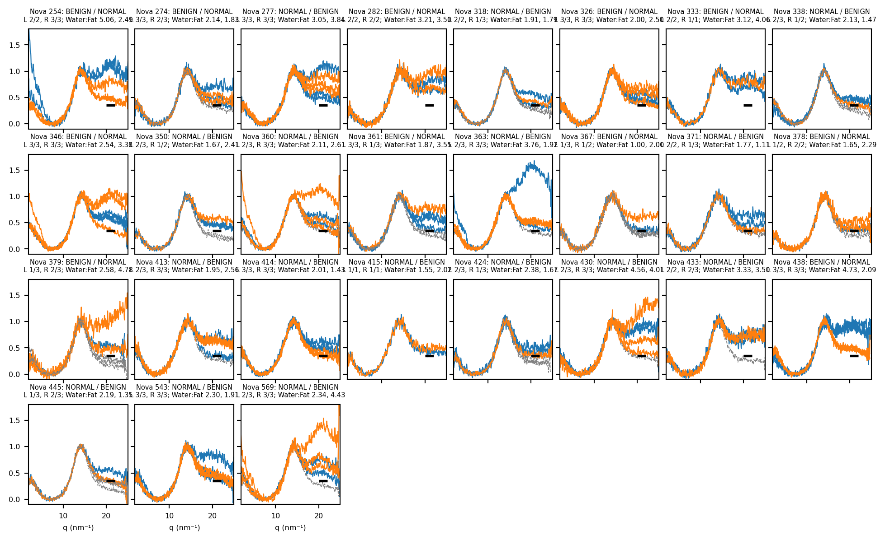
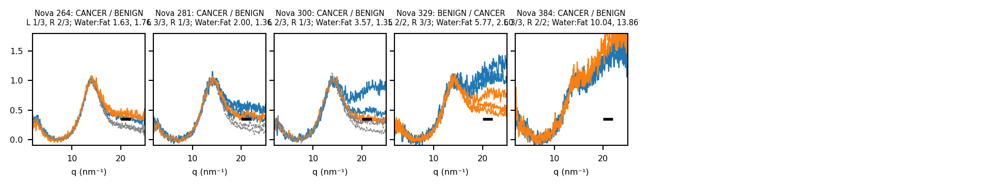
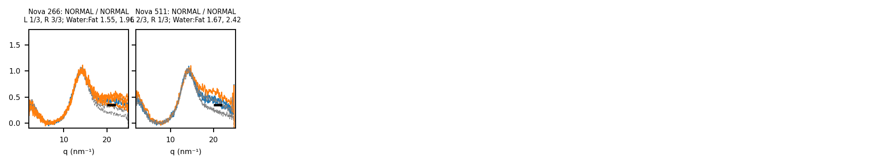
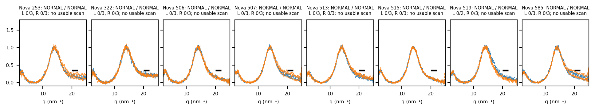
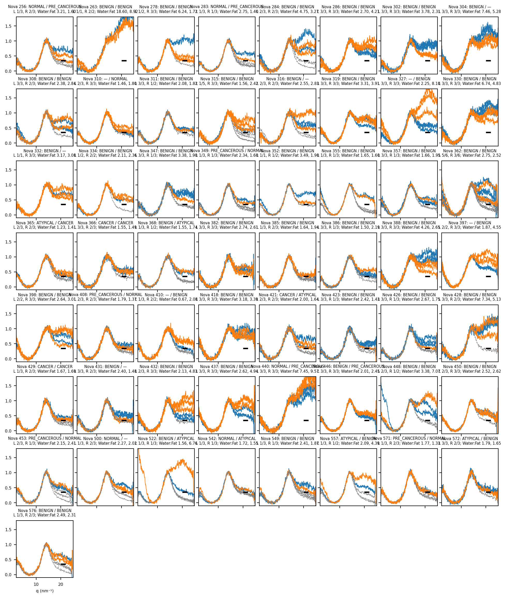

Code
plot_group(group_novas["CANCER vs NORMAL"], "CANCER vs NORMAL")
Every patient in the main analysis with both breasts usable under the water-peak rule of Appendix C, plotted the same way as the newest patients (Appendix G): one panel per patient, usable scans coloured (left blue, right orange), rejected scans grey and dashed, black bar the water-peak threshold. No outcome tinting — every patient in the usable groups already has both breasts usable. Grouped by the label pair used in the comparisons (109 patients), plus the NORMAL/NORMAL patients that missed the threshold entirely.
18 patients: the headline paired comparison of Appendix C.
plot_group(group_novas["CANCER vs NORMAL"], "CANCER vs NORMAL")
| Patient | Labels (L / R) | Usable scans, L | Usable scans, R | Water:Fat, L | Water:Fat, R |
|---|---|---|---|---|---|
| Nova 269 | NORMAL / CANCER | 2 of 3 | 3 of 3 | 1.97 | 3.03 |
| Nova 289 | NORMAL / CANCER | 2 of 3 | 2 of 2 | 3.02 | 4.87 |
| Nova 296 | NORMAL / CANCER | 3 of 3 | 2 of 3 | 2.42 | 2.29 |
| Nova 301 | NORMAL / CANCER | 3 of 3 | 3 of 3 | 3.39 | 4.28 |
| Nova 313 | CANCER / NORMAL | 3 of 3 | 2 of 3 | 2.12 | 3.05 |
| Nova 341 | CANCER / NORMAL | 2 of 2 | 2 of 3 | 3.38 | 1.51 |
| Nova 342 | CANCER / NORMAL | 3 of 3 | 1 of 2 | 6.25 | 3.09 |
| Nova 354 | NORMAL / CANCER | 2 of 3 | 1 of 2 | 2.25 | 2.58 |
| Nova 359 | NORMAL / CANCER | 3 of 3 | 3 of 3 | 2.96 | 7.37 |
| Nova 373 | CANCER / NORMAL | 3 of 3 | 3 of 3 | 2.33 | 2.87 |
| Nova 383 | NORMAL / CANCER | 3 of 3 | 3 of 3 | 2.25 | 2.39 |
| Nova 439 | NORMAL / CANCER | 3 of 3 | 3 of 3 | 2.60 | 5.18 |
| Nova 533 | NORMAL / CANCER | 1 of 3 | 3 of 3 | 1.49 | 1.95 |
| Nova 541 | CANCER / NORMAL | 3 of 3 | 2 of 3 | 4.07 | 1.67 |
| Nova 550 | CANCER / NORMAL | 1 of 3 | 1 of 3 | 1.76 | 1.66 |
| Nova 552 | CANCER / NORMAL | 1 of 3 | 2 of 3 | 3.78 | 1.89 |
| Nova 570 | NORMAL / CANCER | 1 of 3 | 1 of 2 | 1.79 | 2.06 |
| Nova 588 | NORMAL / CANCER | 2 of 2 | 2 of 2 | 3.13 | 9.08 |
27 patients.
plot_group(group_novas["BENIGN vs NORMAL"], "BENIGN vs NORMAL")
| Patient | Labels (L / R) | Usable scans, L | Usable scans, R | Water:Fat, L | Water:Fat, R |
|---|---|---|---|---|---|
| Nova 254 | BENIGN / NORMAL | 2 of 2 | 3 of 3 | 5.06 | 2.49 |
| Nova 274 | BENIGN / NORMAL | 3 of 3 | 2 of 3 | 2.14 | 1.83 |
| Nova 277 | NORMAL / BENIGN | 3 of 3 | 3 of 3 | 3.05 | 3.84 |
| Nova 282 | BENIGN / NORMAL | 2 of 2 | 2 of 2 | 3.21 | 3.50 |
| Nova 318 | NORMAL / BENIGN | 2 of 2 | 1 of 3 | 1.91 | 1.79 |
| Nova 326 | BENIGN / NORMAL | 3 of 3 | 3 of 3 | 2.00 | 2.50 |
| Nova 333 | BENIGN / NORMAL | 2 of 2 | 1 of 1 | 3.12 | 4.06 |
| Nova 338 | NORMAL / BENIGN | 2 of 3 | 1 of 2 | 2.13 | 1.47 |
| Nova 346 | BENIGN / NORMAL | 3 of 3 | 3 of 3 | 2.54 | 3.38 |
| Nova 350 | NORMAL / BENIGN | 2 of 3 | 1 of 2 | 1.67 | 2.41 |
| Nova 360 | NORMAL / BENIGN | 2 of 3 | 3 of 3 | 2.11 | 2.61 |
| Nova 361 | BENIGN / NORMAL | 3 of 3 | 1 of 3 | 1.87 | 3.55 |
| Nova 363 | NORMAL / BENIGN | 2 of 3 | 3 of 3 | 3.76 | 1.92 |
| Nova 367 | BENIGN / NORMAL | 1 of 3 | 1 of 2 | 1.00 | 2.00 |
| Nova 371 | NORMAL / BENIGN | 2 of 2 | 1 of 3 | 1.77 | 1.11 |
| Nova 378 | BENIGN / NORMAL | 1 of 2 | 2 of 2 | 1.65 | 2.29 |
| Nova 379 | BENIGN / NORMAL | 1 of 3 | 2 of 3 | 2.58 | 4.78 |
| Nova 413 | NORMAL / BENIGN | 2 of 3 | 3 of 3 | 1.95 | 2.56 |
| Nova 414 | NORMAL / BENIGN | 3 of 3 | 3 of 3 | 2.01 | 1.43 |
| Nova 415 | NORMAL / BENIGN | 1 of 1 | 1 of 1 | 1.55 | 2.02 |
| Nova 424 | NORMAL / BENIGN | 2 of 3 | 1 of 3 | 2.38 | 1.67 |
| Nova 430 | NORMAL / BENIGN | 2 of 3 | 3 of 3 | 4.56 | 4.01 |
| Nova 433 | NORMAL / BENIGN | 2 of 2 | 2 of 3 | 3.33 | 3.50 |
| Nova 438 | BENIGN / NORMAL | 3 of 3 | 3 of 3 | 4.73 | 2.09 |
| Nova 445 | NORMAL / BENIGN | 1 of 3 | 2 of 3 | 2.19 | 1.35 |
| Nova 543 | NORMAL / BENIGN | 3 of 3 | 3 of 3 | 2.30 | 1.91 |
| Nova 569 | NORMAL / BENIGN | 2 of 3 | 3 of 3 | 2.34 | 4.43 |
5 patients.
plot_group(group_novas["CANCER vs BENIGN"], "CANCER vs BENIGN")
| Patient | Labels (L / R) | Usable scans, L | Usable scans, R | Water:Fat, L | Water:Fat, R |
|---|---|---|---|---|---|
| Nova 264 | CANCER / BENIGN | 1 of 3 | 2 of 3 | 1.63 | 1.76 |
| Nova 281 | CANCER / BENIGN | 3 of 3 | 1 of 3 | 2.00 | 1.36 |
| Nova 300 | CANCER / BENIGN | 2 of 3 | 1 of 3 | 3.57 | 1.35 |
| Nova 329 | BENIGN / CANCER | 2 of 2 | 3 of 3 | 5.77 | 2.60 |
| Nova 384 | CANCER / BENIGN | 3 of 3 | 2 of 2 | 10.04 | 13.86 |
2 patients: the healthy baseline.
plot_group(group_novas["NORMAL vs NORMAL"], "NORMAL vs NORMAL")
| Patient | Labels (L / R) | Usable scans, L | Usable scans, R | Water:Fat, L | Water:Fat, R |
|---|---|---|---|---|---|
| Nova 266 | NORMAL | 1 of 3 | 3 of 3 | 1.55 | 1.96 |
| Nova 511 | NORMAL | 2 of 3 | 1 of 3 | 1.67 | 2.42 |
Patients with two NORMAL breasts and no usable scan in either breast: every scan sits below the water-peak threshold. Same panel layout; all scans are rejected, so they are shown dashed. 8 patients.
plot_missed(nn_missed)
| Patient | Labels (L / R) | Usable scans, L | Usable scans, R |
|---|---|---|---|
| Nova 253 | NORMAL / NORMAL | 0 of 3 | 0 of 3 |
| Nova 322 | NORMAL / NORMAL | 0 of 3 | 0 of 3 |
| Nova 506 | NORMAL / NORMAL | 0 of 3 | 0 of 3 |
| Nova 507 | NORMAL / NORMAL | 0 of 3 | 0 of 3 |
| Nova 513 | NORMAL / NORMAL | 0 of 3 | 0 of 3 |
| Nova 515 | NORMAL / NORMAL | 0 of 3 | 0 of 3 |
| Nova 519 | NORMAL / NORMAL | 0 of 2 | 0 of 3 |
| Nova 585 | NORMAL / NORMAL | 0 of 3 | 0 of 3 |
57 patients with both breasts usable whose labels are not one of the pairs above (for example BENIGN/BENIGN, or a side labelled ATYPICAL or PRE_CANCEROUS).
plot_group(group_novas["other"], "other")
| Patient | Labels (L / R) | Usable scans, L | Usable scans, R | Water:Fat, L | Water:Fat, R |
|---|---|---|---|---|---|
| Nova 256 | NORMAL / PRE_CANCEROUS | 1 of 3 | 2 of 3 | 3.21 | 1.60 |
| Nova 263 | BENIGN | 1 of 1 | 2 of 2 | 18.60 | 8.92 |
| Nova 278 | BENIGN | 1 of 2 | 3 of 3 | 6.24 | 1.72 |
| Nova 283 | NORMAL / PRE_CANCEROUS | 1 of 3 | 1 of 3 | 2.75 | 1.40 |
| Nova 284 | BENIGN | 2 of 3 | 2 of 3 | 4.75 | 3.27 |
| Nova 286 | BENIGN | 3 of 3 | 3 of 3 | 2.70 | 4.21 |
| Nova 302 | BENIGN | 3 of 3 | 3 of 3 | 3.78 | 2.31 |
| Nova 304 | BENIGN / — | 3 of 3 | 3 of 3 | 7.46 | 5.28 |
| Nova 308 | BENIGN | 3 of 3 | 2 of 3 | 2.38 | 2.84 |
| Nova 310 | — / NORMAL | 2 of 3 | 3 of 3 | 1.46 | 1.80 |
| Nova 311 | BENIGN | 3 of 3 | 1 of 2 | 2.08 | 1.82 |
| Nova 315 | BENIGN | 1 of 5 | 3 of 3 | 1.56 | 2.42 |
| Nova 316 | BENIGN / — | 2 of 3 | 2 of 3 | 2.55 | 2.83 |
| Nova 319 | BENIGN | 3 of 3 | 3 of 3 | 3.31 | 3.91 |
| Nova 327 | — / BENIGN | 3 of 3 | 3 of 3 | 2.25 | 8.10 |
| Nova 330 | BENIGN | 3 of 3 | 3 of 3 | 6.74 | 4.83 |
| Nova 332 | BENIGN / — | 1 of 1 | 3 of 3 | 3.17 | 3.08 |
| Nova 334 | BENIGN | 1 of 2 | 2 of 2 | 2.11 | 2.36 |
| Nova 347 | BENIGN | 3 of 3 | 1 of 3 | 3.38 | 1.90 |
| Nova 349 | PRE_CANCEROUS / NORMAL | 1 of 3 | 1 of 3 | 2.34 | 1.60 |
| Nova 352 | BENIGN | 1 of 1 | 1 of 2 | 3.49 | 1.90 |
| Nova 355 | BENIGN | 1 of 3 | 1 of 3 | 1.65 | 1.60 |
| Nova 357 | BENIGN | 3 of 3 | 1 of 3 | 1.66 | 1.95 |
| Nova 362 | BENIGN | 5 of 6 | 3 of 6 | 2.75 | 2.52 |
| Nova 365 | ATYPICAL / CANCER | 2 of 3 | 2 of 3 | 1.23 | 1.41 |
| Nova 366 | CANCER | 3 of 3 | 2 of 3 | 1.55 | 1.49 |
| Nova 368 | BENIGN / ATYPICAL | 1 of 3 | 1 of 2 | 1.55 | 1.74 |
| Nova 382 | BENIGN | 3 of 3 | 3 of 3 | 2.74 | 2.61 |
| Nova 385 | BENIGN | 1 of 3 | 2 of 3 | 1.64 | 1.94 |
| Nova 386 | BENIGN | 3 of 3 | 1 of 3 | 1.50 | 2.19 |
| Nova 388 | BENIGN | 3 of 3 | 3 of 3 | 4.26 | 2.65 |
| Nova 397 | — / BENIGN | 2 of 2 | 3 of 3 | 1.87 | 4.55 |
| Nova 398 | BENIGN | 2 of 2 | 3 of 3 | 2.64 | 3.01 |
| Nova 408 | PRE_CANCEROUS / NORMAL | 2 of 3 | 2 of 3 | 1.79 | 1.37 |
| Nova 410 | — / BENIGN | 1 of 3 | 2 of 2 | 0.67 | 2.08 |
| Nova 418 | BENIGN | 3 of 3 | 3 of 3 | 3.18 | 3.39 |
| Nova 421 | CANCER / ATYPICAL | 2 of 3 | 2 of 3 | 2.00 | 1.64 |
| Nova 423 | BENIGN | 3 of 3 | 1 of 3 | 2.42 | 1.43 |
| Nova 426 | BENIGN | 3 of 3 | 1 of 3 | 2.67 | 1.75 |
| Nova 428 | BENIGN | 3 of 3 | 2 of 3 | 7.34 | 5.13 |
| Nova 429 | CANCER | 1 of 3 | 2 of 3 | 1.67 | 1.69 |
| Nova 431 | BENIGN / — | 3 of 3 | 2 of 3 | 2.40 | 1.48 |
| Nova 432 | BENIGN | 2 of 3 | 3 of 3 | 2.13 | 4.83 |
| Nova 437 | BENIGN | 3 of 3 | 3 of 3 | 2.62 | 4.94 |
| Nova 440 | NORMAL / PRE_CANCEROUS | 3 of 3 | 3 of 3 | 7.45 | 9.57 |
| Nova 446 | BENIGN / PRE_CANCEROUS | 3 of 3 | 3 of 3 | 2.01 | 2.45 |
| Nova 448 | BENIGN | 2 of 3 | 1 of 2 | 3.38 | 7.07 |
| Nova 450 | BENIGN | 2 of 3 | 3 of 3 | 2.52 | 2.62 |
| Nova 453 | PRE_CANCEROUS / NORMAL | 2 of 3 | 1 of 3 | 2.15 | 2.41 |
| Nova 500 | NORMAL / — | 1 of 3 | 2 of 3 | 2.27 | 2.02 |
| Nova 522 | BENIGN / ATYPICAL | 1 of 3 | 1 of 3 | 1.56 | 6.76 |
| Nova 542 | NORMAL / ATYPICAL | 1 of 3 | 1 of 3 | 1.72 | 1.55 |
| Nova 549 | BENIGN | 1 of 3 | 1 of 3 | 2.41 | 1.87 |
| Nova 557 | ATYPICAL / BENIGN | 1 of 3 | 1 of 2 | 2.09 | 4.39 |
| Nova 571 | PRE_CANCEROUS / NORMAL | 1 of 3 | 2 of 3 | 1.77 | 1.33 |
| Nova 572 | ATYPICAL / BENIGN | 3 of 3 | 2 of 3 | 1.79 | 1.65 |
| Nova 576 | BENIGN | 1 of 3 | 2 of 3 | 2.49 | 2.31 |